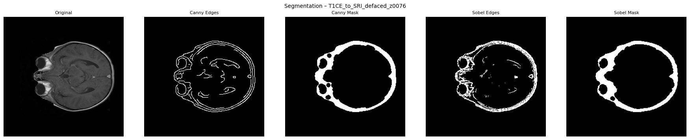
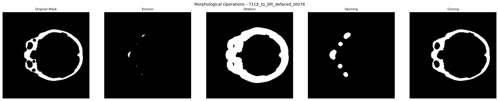
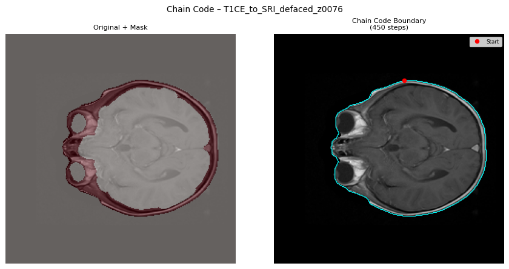
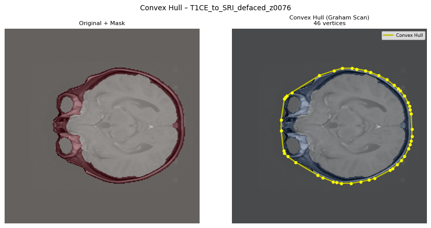
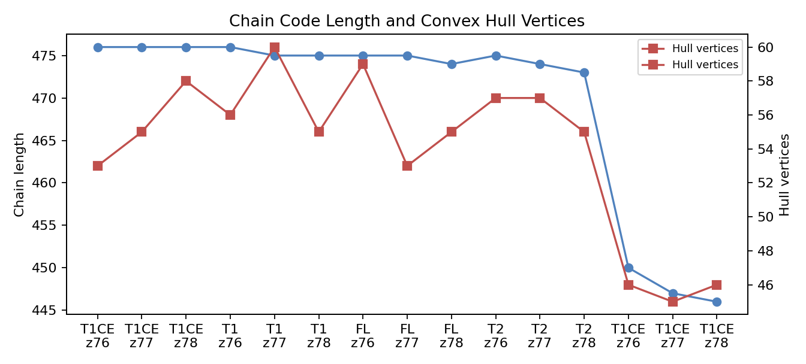

1. Two-Minute Overview
English: "In Assignment 2, we moved from filtering to segmentation and shape analysis. We used brain MRI slices from the BraTS-PEDs dataset chunk. First, the notebook loaded NIfTI MRI volumes, selected center slices, and normalized each slice. Then it applied Canny and Sobel edge detection to find boundaries. From the edges, it created binary masks. After that, morphology operations such as erosion, dilation, opening, and closing were applied to clean the mask. The cleaned mask was used for shape description. We extracted Freeman chain code, first difference, shape number, and convex hull using Graham Scan. Finally, the notebook saved visual outputs for masks, morphology, chain code, convex hull, and a CSV report with chain length and hull vertices. The main idea was to convert an MRI slice into a clean object boundary and then describe its shape numerically."
Roman Urdu: "Assignment 2 mein hum filtering se segmentation aur shape analysis ki taraf aaye. Hum ne MRI slices load kiye, normalize kiye, phir Canny aur Sobel se edges nikale. Edges se binary mask bana. Mask ko erosion, dilation, opening aur closing se clean kiya. Clean mask se Freeman chain code, first difference, shape number aur convex hull nikala. End par images aur CSV report save hui. Simple words mein, hum ne image ke object ko background se separate kiya aur us ki shape ko numbers aur diagrams se describe kiya."
Separate the object region and describe its boundary.
Mask images, morphology images, chain overlays, hull overlays, CSV report.
This is classical computer vision shape analysis, not tumor diagnosis.
2. Teacher-Given Objective
The assignment objective was to apply segmentation and shape representation methods on medical image slices.
In practical terms, this means: detect edges, create masks, clean masks using morphology, trace boundaries, and describe shapes using chain code and convex hull.
What you should say in viva
"The objective of Assignment 2 was to segment MRI slices and then study the shape of the segmented region. We used edge detection for masks, morphology for cleaning, and chain code plus convex hull for boundary and shape representation."
Do not say "this detects tumor perfectly" or "this gives final medical diagnosis." Safe wording is: "It creates and studies masks from MRI slices."
Your spoken understanding check
You said: "Detection mein Canny aur Sobel use hue, right?"
Correct version: Yes, but say "edge detection" instead of only "detection." Canny and Sobel detect edges, not final tumors.
Roman Urdu: Haan, Canny aur Sobel edge detection ke liye use hue. Yeh final disease detection nahi kar rahe, sirf boundaries find kar rahe hain.
A1 filtered images used here? No. Assignment 2 did not take the blurred or filtered PNG outputs from Assignment 1 as input.
What actually happened: The notebook downloaded or accessed the same KaggleHub dataset chunk again, loaded raw NIfTI MRI volumes, normalized slices, and then ran segmentation.
Safe viva answer: "Assignment 1 and Assignment 2 use the same dataset source, but Assignment 2 starts again from MRI volumes. It does not directly use the saved blurred images from Assignment 1."
3. Important Terms Before Code
| Term | Simple English | Roman Urdu |
|---|---|---|
| Segmentation | Separating the object or region from background. | Image mein important area ko background se alag karna. |
| Edge | A place where pixel intensity changes quickly. | Jahan brightness achanak change ho, wahan edge hota hai. |
| Binary mask | An image with only 0 and 1 values. 1 means selected region. | Black and white image, jahan white selected area hota hai. |
| Canny | An edge detector that usually gives cleaner edges. | Edge find karne ka method jo noise ko bhi handle karta hai. |
| Sobel | An edge detector based on image gradient. | Brightness ke change ko measure karke edge nikalta hai. |
| Morphology | Operations that change mask shape. | Mask ki shape ko clean ya adjust karne ke operations. |
| Connected component | A group of touching white pixels. | White pixels ka connected group. |
| Boundary | The outer line of the selected region. | Selected region ki outer line. |
| Chain code | Boundary represented as direction numbers. | Boundary ko direction numbers ki list mein store karna. |
| Convex hull | Smallest outer polygon that covers the shape. | Shape ke around sab se chota outer cover. |
4. Dataset and Counts
BraTS-PEDs from The Cancer Imaging Archive.
Full collection: about 457 subjects and around 32.7 GB. This is subject count, not a simple PNG image count.
KaggleHub chunk: awansaad6797/cancer-dataset.
Reason: full dataset bohat large tha, is liye manageable chunk use kiya.
| Item | Your actual result | Meaning |
|---|---|---|
| Raw dataset total | About 457 subjects in original TCIA collection | Important: 457 means subjects or cases, not 457 slices. One subject can have multiple MRI volumes, and each volume has many slices. |
| Approx slices inside one volume | About 155 z-slices in the processed BraTS-style volumes | A2 output uses center slices 76, 77, 78. This strongly matches a 155-slice volume because the center is around slice 77. |
| A1 actual run | 80 usable non-seg MRI files, with code limit 100 volumes and 20 center slices each | A1 used the sorted usable MRI list. It was not random. Since only 80 usable files were found, it used 80, not full 100. |
| A2 submitted setting | 5 volumes and 3 center slices per volume | This does not mean the notebook can only ever process 15. It means the submitted A2 configuration was set to 5 x 3 = 15 slice records. |
| Which volumes in A2? | First 5 non-seg NIfTI files after sorting | The line all_nii = all_nii[:MAX_VOLUMES] takes the first 5 usable image volumes after excluding files with seg in the name. |
| CSV rows | 15 | Each row is one processed slice record in chain_code_report.csv. |
| Unique subject/file names in CSV | 4 | T1CE, T1, FL, and T2 style MRI files. |
| Slice numbers | 76, 77, 78 | These are center slices selected from each MRI volume. |
| Saved PNGs per stage | 12 | There are 12 unique PNGs in masks, morphology, chain code, and convex hull folders. |
English: This was a lab-scale classical CV task. Each selected slice produced masks, morphology, chain code, hull images, and CSV features. A small limit keeps the notebook fast and the outputs easy to inspect in viva.
Roman Urdu: A2 ka goal deep training nahi tha. Goal algorithms ko show karna tha. Har slice ke multiple outputs bante hain, is liye 5 volumes aur 3 center slices ka limit practical tha.
Safe answer: "We used a small subset because Assignment 2 was focused on demonstrating segmentation and shape representation methods clearly, not on training a large model."
Assignment 1: Larger filtering experiment. It used up to 100 volumes, but the actual notebook found 80 usable non-seg MRI files. It selected up to 20 center slices per volume.
Assignment 2: Smaller shape-analysis demo. It was configured to use 5 volumes and 3 center slices per volume, so the CSV has 15 records.
Roman Urdu: A1 mein filtering metrics ke liye zyada data use hua. A2 mein algorithms clearly show karne ke liye chota subset use hua. Dono random nahi thay, sorted file list se first usable files li gayi.
English: The CSV keeps every written record. Some output PNG names repeated because the same subject and slice tag appeared again, so a later PNG overwrote an earlier PNG. That is why the CSV has 15 records but each visual folder has 12 unique saved images.
Roman Urdu: CSV har record save karta hai. Lekin image filename repeat ho gaya to old image overwrite ho gayi. Is liye CSV mein 15 rows hain, magar folders mein 12 unique PNG images hain.
"The original dataset has about 457 subjects, not just 457 slices. In Assignment 2, our submitted notebook was configured for 5 MRI volumes and 3 center slices per volume, so the CSV has 15 slice records. Assignment 1 used a larger setting: up to 100 volumes and 20 center slices, but the actual run found 80 usable non-seg MRI files."
5. Code Block: Setup and Folders
MAX_VOLUMES = 5
MAX_SLICES = 3
MORPH_ITER = 2
CANNY_SIGMA = 1.5
OUT_DIR = Path("output_a2")
for d in [OUT_DIR / "masks",
OUT_DIR / "morphology",
OUT_DIR / "chain_code",
OUT_DIR / "convex_hull"]:
d.mkdir(parents=True, exist_ok=True)Install and import libraries, set processing limits, and create output folders.
Input: MRI dataset path after KaggleHub download.
Output: folders for masks, morphology, chain code, and convex hull.
MAX_VOLUMES = 5 means only 5 MRI volumes are used.
MAX_SLICES = 3 means 3 center slices are selected from each volume.
This block controls why Assignment 2 output is small and organized into four visual stages.
"The setup block defines how much data to process and creates separate folders for each output stage."
6. Code Block: Segmentation With Canny and Sobel
def canny_mask(slc, sigma=CANNY_SIGMA):
edges = canny(slc, sigma=sigma)
closed = binary_closing(edges, structure=disk(4))
labeled, n = nd_label(closed)
if n == 0:
return edges.astype(np.uint8), edges.astype(np.uint8)
sizes = [(labeled == i).sum() for i in range(1, n + 1)]
largest = np.argmax(sizes) + 1
mask = (labeled == largest).astype(np.uint8)
return edges.astype(np.uint8), mask
def sobel_mask(slc, threshold=0.1):
magnitude = sobel(slc)
edges = (magnitude > threshold).astype(np.uint8)
closed = binary_closing(edges, structure=disk(4))
labeled, n = nd_label(closed)
...Find edges and convert them into binary masks.
Input: normalized MRI slice.
Output: Canny edges, Canny mask, Sobel edges, Sobel mask.
canny(slc, sigma=1.5) detects smoother edges.
sobel(slc) calculates gradient magnitude.
largest keeps the largest connected component as the main mask.
The output image in the masks/ folder shows Original, Canny Edges, Canny Mask, Sobel Edges, and Sobel Mask.
"Canny and Sobel detect boundaries in the MRI slice. Then the code closes broken edges and keeps the largest connected region as the mask."
How edges become a binary mask
Edges are thin lines. They can be broken. Red dots show small gaps.
Closing connects small gaps. The connected region becomes a binary mask: inside is 1, outside is 0.
Edge image is like thin white lines on black background. It only says "boundary yahan ho sakti hai."
Binary mask is a filled or selected region. White means selected object, black means background.
A binary mask is a simple segmentation mask with only two classes: background 0 and selected region 1. A full segmentation mask can have many labels, for example background, edema, tumor core, and enhancing tumor.
Yes, broken edges are connected using morphology. In this code, binary_closing(edges, structure=disk(4)) connects small gaps before selecting the main component.
7. Canny vs Sobel
| Method | How it works | Good point | Limitation |
|---|---|---|---|
| Canny | First smooths the image, then finds gradients, thins edges, and keeps strong connected edges. | Usually cleaner and less noisy. | Depends on sigma and thresholds. |
| Sobel | Uses horizontal and vertical gradient filters to measure intensity change. | Simple and fast. | Can show more noisy or thick edges. |
Edge idea
English: Edge detection looks for sudden intensity change. In MRI, this often happens near tissue boundaries.
Roman Urdu: Edge detection brightness ke sudden change ko find karti hai. MRI mein yeh tissue boundary ke near hota hai.
"Canny was used as the primary mask because it usually gives cleaner edges, while Sobel was included for comparison."
Intuition: gradient kya hota hai?
English: Gradient means how fast brightness changes from one pixel to the next. If change is high, there may be an edge.
Roman Urdu: Gradient ka matlab hai brightness kitni fast change ho rahi hai. Jahan change zyada ho, wahan edge ho sakta hai.
Sobel checks change in x direction and y direction. Then it combines them.
edge_strength = sqrt(Gx^2 + Gy^2)
Roman Urdu: Gx left-right change dekhta hai, Gy up-down change dekhta hai.
1. Smooth image, 2. find gradient, 3. thin the edge, 4. keep strong edges, 5. connect weak edges if they touch strong edges.
Using both gives comparison. Sobel is simple gradient view. Canny is cleaner edge pipeline. In our later steps, Canny mask became the primary mask.
You said: "Sobel vertical aur horizontal gradient dekhta hai, aur Canny strong edges rakhta hai."
Correct: Yes. Say it like this: "Sobel directly measures horizontal and vertical intensity change. Canny is a fuller edge pipeline that smooths, detects gradient, thins edges, and keeps reliable edges."
8. Morphology Operations
Original mask
Original binary mask before cleaning.
Yeh starting mask hai jahan white pixels selected region show karte hain.
| Operation | Simple meaning | Roman Urdu |
|---|---|---|
| Erosion | Shrinks white region. | White area ko chota karta hai. |
| Dilation | Expands white region. | White area ko phailata hai. |
| Opening | Erosion then dilation, removes small noise. | Pehle shrink, phir expand. Choti noise remove hoti hai. |
| Closing | Dilation then erosion, fills small gaps. | Pehle expand, phir shrink. Chotay gaps fill hotay hain. |
Mathematical idea and control factors
This is the small shape that moves over the mask. In the code it is disk(3).
Roman Urdu: Structuring element aik choti shape hoti hai jo mask par move karti hai. Disk ka radius jitna bara ho, effect utna strong hota hai.
MORPH_ITER = 2 means the operation repeats two times.
More iterations: more erosion shrink, more dilation expansion, stronger opening or closing.
A erosion B: keep a pixel white only if the structuring element fully fits inside the white region.
Roman Urdu: Pixel tab white rahega jab disk poori tarah white area ke andar fit ho.
A dilation B: make a pixel white if the structuring element touches the white region.
Roman Urdu: Agar disk white area ko touch kare to nearby pixels bhi white ho jatay hain.
9. Code Block: Morphological Cleaning
def morphological_pipeline(mask, iterations=MORPH_ITER):
struct = disk(3).astype(bool)
eroded = binary_erosion(mask, structure=struct, iterations=iterations)
dilated = binary_dilation(mask, structure=struct, iterations=iterations)
opened = binary_opening(mask, structure=struct, iterations=iterations)
closed = binary_closing(mask, structure=struct, iterations=iterations)
return {
"Original Mask": mask,
"Erosion": eroded,
"Dilation": dilated,
"Opening": opened,
"Closing": closed,
}Clean and compare the binary mask using four morphology operations.
Input: Canny mask.
Output: original mask, erosion, dilation, opening, closing.
disk(3) is the structuring element. It controls the neighborhood shape.
MORPH_ITER = 2 repeats the operation two times.
These operations come from scipy.ndimage, while disk comes from skimage.morphology.
The morphology/ images show how each operation changes the same mask.
"Morphology cleans the binary mask. In our pipeline, closing was used as the cleaned mask because it connects broken boundary parts and fills small gaps."
10. Chain Code, First Difference, and Shape Number
It follows the boundary and stores each movement as a number from 0 to 7.
Roman Urdu: Boundary par chal kar har direction ko number mein store karta hai.
Difference between consecutive chain directions, calculated modulo 8.
Roman Urdu: Har next direction aur previous direction ka difference.
Smallest rotation of first difference, so the description depends less on start point.
Roman Urdu: First difference ka best rotated version, taake start point ka effect kam ho.
0 right, 1 up-right, 2 up, 3 up-left, 4 left, 5 down-left, 6 down, 7 down-right.
up-left
up
up-right
left
pixel
right
down-left
down
down-right
First difference with tiny example
Example chain code: [0, 0, 6, 6, 4, 4, 2, 2]
This means: right, right, down, down, left, left, up, up. It is like walking around a square.
First difference: subtract previous direction from current direction using modulo 8.
(current - previous) mod 8
For example, from 0 to 6: (6 - 0) mod 8 = 6. From 6 to 4: (4 - 6) mod 8 = 6.
Why useful: Chain code tells where you moved. First difference tells how your direction changed or turned.
Roman Urdu: Chain code movement batata hai. First difference batata hai ke turn kitna aaya.
Shape number intuition
If you start tracing the same boundary from a different point, the chain code list can start differently. Shape number tries different rotations of the first difference and picks the smallest one.
Why useful: Same shape ko start point change hone par bhi similar description mil sakti hai.
Safe viva answer: "Shape number is a normalized boundary description made from first difference. It reduces the effect of starting point."
"Chain code converts the boundary into direction numbers. First difference makes the representation more stable to direction changes, and shape number makes it less dependent on the starting point."
11. Code Block: Chain Code
FREEMAN_DIR = {
0: ( 0, 1), 1: (-1, 1), 2: (-1, 0), 3: (-1, -1),
4: ( 0, -1), 5: ( 1, -1), 6: ( 1, 0), 7: ( 1, 1),
}
def compute_chain_code(mask):
labeled, n = nd_label(mask)
sizes = [(labeled == i).sum() for i in range(1, n + 1)]
region = (labeled == (np.argmax(sizes) + 1)).astype(np.uint8)
eroded = binary_erosion(region, structure=np.ones((3, 3)))
boundary = region - eroded
coords = list(zip(*np.where(boundary > 0)))
...
return start, chainTrace the cleaned mask boundary and save its movement directions.
Input: cleaned mask from closing.
Output: starting boundary point and chain code list.
boundary = region - eroded extracts only the outer boundary.
FREEMAN_DIR maps each direction number to row and column movement.
The chain_code/ image shows the mask overlay and a cyan line following the boundary.
"The chain code block first extracts the boundary from the mask, then follows boundary pixels and stores the movement as direction numbers."
Why boundary = region - eroded?
The full filled mask. White pixels are the selected object area.
A slightly smaller version of the same mask after erosion.
Full region minus smaller region leaves only the outer ring. That ring is the boundary.
Original mask se choti eroded mask minus kar do to beech ka filled area nikal jata hai aur sirf outer line bachti hai.
12. Convex Hull and Graham Scan
The smallest outer polygon that covers all boundary points.
Roman Urdu: Boundary ke around sab se chota outer cover.
An algorithm that sorts points around a pivot and keeps only points that form the outer hull.
Roman Urdu: Points ko angle ke hisaab se sort karta hai aur outer points rakhta hai.
def graham_scan(points):
points = list(set(points))
pivot = min(points, key=lambda p: (p[1], p[0]))
sorted_pts = sorted(points_without_pivot,
key=lambda p: (polar_angle(p), dist(p)))
hull = [pivot, sorted_pts[0]]
for p in sorted_pts[1:]:
while len(hull) > 1 and cross_product(hull[-2], hull[-1], p) <= 0:
hull.pop()
hull.append(p)
return hullFind the outer polygon around the cleaned boundary points.
Input: sampled boundary points from cleaned mask.
Output: hull vertices.
cross_product decides whether a point keeps the outer turn or should be removed.
The convex_hull/ image shows the yellow hull line and hull vertices on the MRI slice.
"Convex hull gives a simpler outer shape than chain code. Chain code is detailed, while hull is a compact outer boundary."
Why chain code is longer than convex hull
Chain code follows many small boundary steps, so it becomes long.
Convex hull keeps only outer cover points, so it has fewer vertices.
13. Code Block: Main Processing Loop
for nii_path in all_nii:
vol = nib.load(str(nii_path)).get_fdata(dtype=np.float32)
for z in centre_slice_indices(vol.shape[2], MAX_SLICES):
slc = normalise(vol[:, :, z])
c_edges, c_mask = canny_mask(slc)
s_edges, s_mask = sobel_mask(slc)
save_mask_comparison(...)
morph_results = morphological_pipeline(c_mask)
cleaned_mask = morph_results["Closing"]
start_pt, chain = compute_chain_code(cleaned_mask)
fd = first_difference(chain)
snum = shape_number(fd)
hull_pts = graham_scan(boundary_points)
writer.writerow(...)Run the complete Assignment 2 pipeline on every selected slice.
Input: selected MRI volumes and center slices.
Output: four image folders and chain_code_report.csv.
Every selected slice can produce mask, morphology, chain code, and convex hull visuals.
Each CSV row stores subject, slice, chain length, chain preview, first difference preview, shape number preview, and hull vertices.
"The main loop connects all steps: load slice, segment it, clean the mask, extract boundary features, save images, and write numeric results to CSV."
Main loop in very simple words
| Line idea | What happens | Output connection |
|---|---|---|
| Pick one MRI file | Notebook opens one NIfTI volume. | Subject name comes from file name. |
| Pick center slices | It chooses slice 76, 77, 78 style center slices. | Each slice becomes one record. |
| Normalize slice | Intensity values are scaled to 0 to 1. | Edge methods work more consistently. |
| Make edges and masks | Canny and Sobel are applied. | Saved in masks/. |
| Clean mask | Morphology operations are applied. | Saved in morphology/. |
| Trace shape | Chain code and convex hull are calculated. | Saved in chain_code/, convex_hull/, and CSV. |
14. Output Images and How to Explain Them
Original MRI: The grayscale slice from the dataset.
Canny mask: The first binary mask made from Canny edges after closing gaps and selecting the largest component.
Clean mask: The Canny mask after morphology, mainly after Closing. This clean mask is used for chain code and convex hull.
Red overlay in chain image: Clean mask on top of MRI.
Blue overlay in hull image: Same clean mask on top of MRI, shown with a different color because the plot is for convex hull.
Roman Urdu: Canny mask pehla mask hai. Clean mask usi Canny mask ka cleaned version hai after morphology. Red aur blue overlay dono clean mask ko show kar rahe hain, bas figures mein color different hai.
Mask comparison

What you are looking at: Original MRI slice, Canny edges, Canny mask, Sobel edges, and Sobel mask.
What changed: The grayscale MRI was converted into edge and mask representations.
Why code produced it: Canny and Sobel searched for intensity changes and the largest connected component was selected.
How to read colors: In mask comparison, white regions are selected pixels and black regions are background.
Good output: clear boundary, less random noise, main region visible.
Bad output: scattered edges, broken object, or background selected as mask.
Viva answer: "This figure shows how edge detection created binary masks from the MRI slice."
Morphology

What you are looking at: Original mask, erosion, dilation, opening, and closing.
What changed: The mask shape shrinks, expands, loses small noise, or fills gaps.
Why code produced it: Morphological operations apply a disk-shaped structuring element to the binary mask.
Good output: cleaned mask with connected boundary.
Bad output: too much erosion or dilation that destroys the useful shape.
Viva answer: "This figure shows how morphology cleans and changes the mask before shape extraction."
Chain code and convex hull

Chain code: The cyan boundary line shows the path followed by the chain code.
Red overlay: The red transparent area is the cleaned mask placed on top of the MRI slice.
Cyan line: This is the traced boundary path. Each small movement along this line becomes a chain code direction number.
Good output: boundary follows the selected mask region.
Limitation: If the mask is weak, chain code will also be weak because it depends on the mask.
Viva answer: "Chain code converts this boundary path into direction numbers."

Convex hull: The yellow polygon is the outer cover around the boundary.
Blue overlay: The blue transparent area is the cleaned mask. Yellow points and lines show the hull vertices and outer polygon.
Good output: hull covers the selected region without too many unnecessary points.
Limitation: Hull does not show inner curves or concave details.
Viva answer: "Convex hull gives a simpler outer shape compared with the detailed chain code."
15. Numeric Results
| Metric | Value | Meaning |
|---|---|---|
| CSV rows | 15 | 15 processed slice records. |
| Average chain length | 469.5 steps | Boundary had about 469 direction steps on average. |
| One chain step | One move to a neighboring boundary pixel | In 8-direction chain code, one step can move right, left, up, down, or diagonal. |
| Chain length range | 446 to 476 | Different masks had slightly different boundary lengths. |
| Average hull vertices | 54.0 | Convex hull needed about 54 outer points on average. |
| Hull vertex range | 45 to 60 | Outer shape complexity changed across slices. |

What this result means: Chain code is longer because it follows the detailed boundary step by step. Convex hull is shorter because it only keeps the outer polygon vertices.
Roman Urdu: Chain code zyada lamba hota hai kyun ke woh boundary ko detail mein follow karta hai. Convex hull chota hota hai kyun ke woh sirf outer cover rakhta hai.
"Our average chain length was about 469.5 steps, while average hull vertices were 54. This shows that chain code gives detailed boundary information, and convex hull gives compact outer shape information."
16. Viva-Style Questions and Simple Answers
A: It was about segmentation, morphology, and shape representation of MRI slices.
A: Separating the important region from the background.
A: Canny gives cleaner edges and handles noise better than a very simple edge detector.
A: Sobel is a simple gradient-based edge detector, useful for comparison.
A: An image where selected region is 1 or white, and background is 0 or black.
A: To clean masks by removing noise, filling gaps, and improving boundaries.
A: Boundary stored as direction numbers from 0 to 7.
A: The smallest outer polygon that covers the selected boundary points.
A: Chain code follows every boundary step, while hull keeps only outer polygon vertices.
A: The quality depends on mask quality. If segmentation is weak, shape features are also weak.
17. Common Examiner Follow-Up Questions
Safe answer: In our output, Canny gave a cleaner connected mask, so we used it for morphology and shape analysis.
Safe answer: No. This assignment focuses on segmentation and shape analysis. It is not a clinical tumor detector.
Safe answer: Then Sobel can be used. We kept both outputs for comparison, but used Canny as the main mask in the pipeline.
Safe answer: It removes small scattered components and keeps the main region for analysis.
Safe answer: Closing fills small gaps and connects broken boundaries, so chain tracing becomes more stable.
Safe answer: It describes changes in direction and makes the representation less dependent on absolute direction.
Safe answer: Shape number is a normalized version of first difference, less dependent on where boundary tracing starts.
Safe answer: Some output filenames repeated and were overwritten. The CSV kept all 15 written records, while each folder shows 12 unique PNG files.
18. Final Assignment 2 Explanation
Click only when you want the full final speech for Assignment 2.
English: "Assignment 2 was about segmentation, morphology, and shape representation. We used the same dataset source as Assignment 1, but Assignment 2 did not use the blurred images from Assignment 1. It started again from MRI NIfTI volumes in the KaggleHub chunk of BraTS-PEDs. The notebook loaded MRI volumes, selected center slices, normalized intensity values, and then applied Canny and Sobel edge detection. Canny and Sobel detect edges, not final tumors. From the edge maps, the code created binary masks by closing small gaps and selecting the largest connected component. Canny was used as the primary mask because it produced a cleaner connected region in our pipeline. Then morphology operations were applied. Erosion shrinks the white region, dilation expands it, opening removes small isolated noise, and closing fills small gaps. The closing result was used as the cleaned mask. From this cleaned mask, the code extracted the boundary by subtracting an eroded region from the original region. The boundary was represented using Freeman 8-direction chain code. First difference measured changes between consecutive chain directions, and shape number normalized this idea so the description depends less on the starting point. Finally, boundary points were used in Graham Scan to draw the convex hull, which is the smallest outer polygon around the selected region. The CSV has 15 processed slice records, while visual folders have 12 unique PNGs because repeated filenames overwrote some images. Average chain length was about 469.5 steps, and average hull size was about 54 vertices. This shows that chain code gives detailed boundary information, while convex hull gives compact outer shape information. The limitation is that these results depend on mask quality, so this is classical shape analysis, not final medical diagnosis."
Roman Urdu: "Assignment 2 segmentation, morphology aur shape representation ke bare mein tha. Dataset source Assignment 1 jaisa tha, lekin A2 ne A1 ki blurred images ko input nahi banaya. A2 ne dobara MRI NIfTI volumes se start kiya. Notebook ne MRI volumes load kiye, center slices select kiye, intensity normalize ki, phir Canny aur Sobel edge detection apply ki. Canny aur Sobel final tumor detect nahi karte, yeh sirf edges ya boundaries find karte hain. Edges se binary mask banaya gaya by closing small gaps aur largest connected component select kar ke. Canny mask ko primary mask liya gaya kyun ke woh cleaner connected region de raha tha. Phir morphology apply hui: erosion white region ko shrink karta hai, dilation white region ko expand karta hai, opening small noise remove karti hai, aur closing small gaps fill karti hai. Closing result clean mask ke taur par use hua. Is clean mask se boundary nikalne ke liye original region se eroded region subtract kiya. Boundary ko Freeman 8-direction chain code se represent kiya gaya. First difference consecutive directions ke changes batata hai, aur shape number start point ka effect kam karta hai. Graham Scan se convex hull banaya gaya, jo selected region ke around smallest outer polygon hota hai. CSV mein 15 processed slice records hain, lekin folders mein 12 unique PNGs hain kyun ke kuch filenames repeat hue aur images overwrite ho gayi. Average chain length 469.5 steps thi aur average hull vertices 54 thay. Is se clear hota hai ke chain code detailed boundary batata hai, jab ke convex hull compact outer shape batata hai. Limitation yeh hai ke result mask quality par depend karta hai, is liye yeh final medical diagnosis nahi hai."